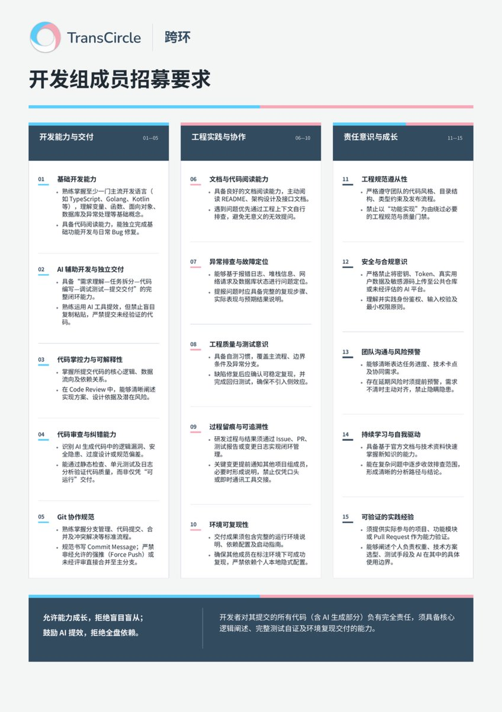

夜桜侵雪～
@Minecraftxfj
@TransCircleOrg 海报使用 GPT 做的吗😁（）

TransCircle 跨环
@TransCircleOrg
TransCircle开发相关工作推进较缓，虽整体框架已基本搭建完成，但细节仍有诸多待完善之处。为确保上线时提供良好的用户体验，现决定公开招募开发组成员。本次招募旨在切实提升效率，而非增设冗员，特制定以下要求，符合条件者欢迎随时联系咨询 https://t.co/LLHxBAHNjf